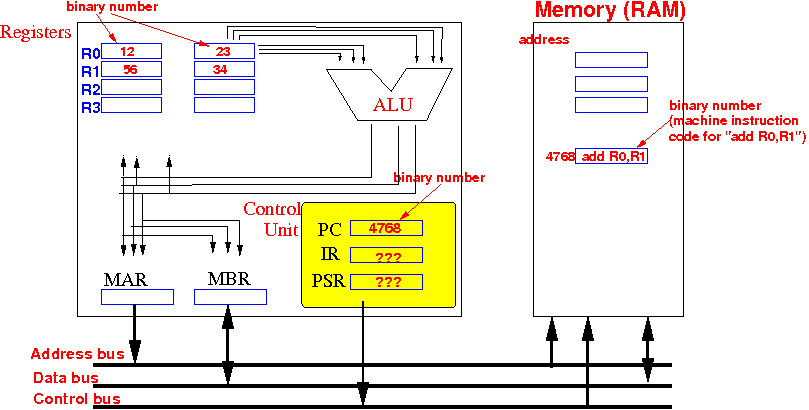
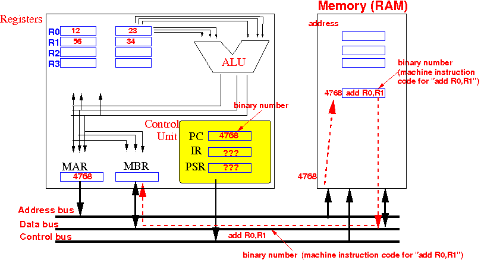
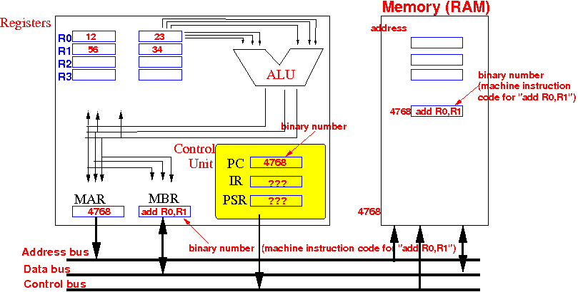
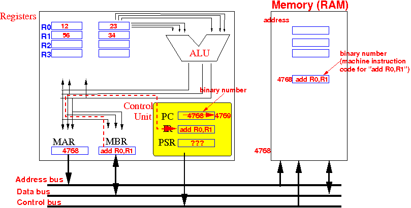
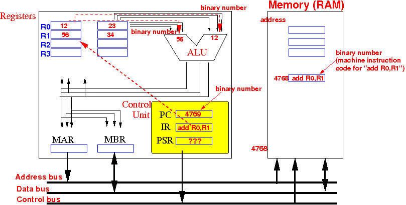
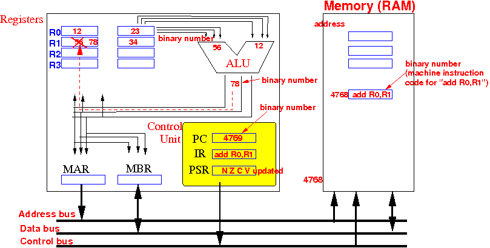
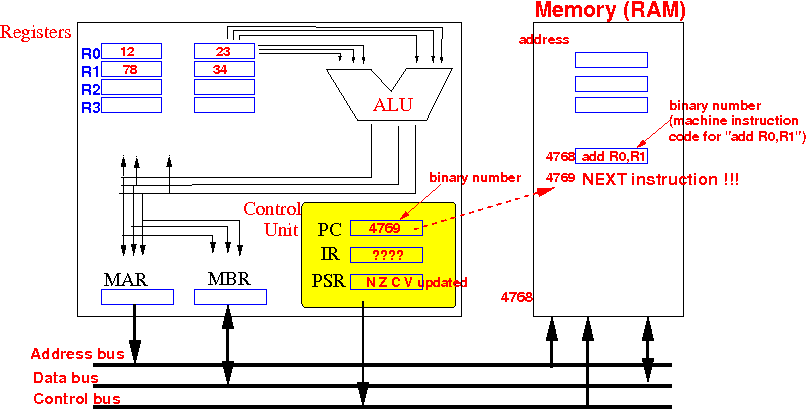

- CPU operation:
- The CPU go through the
same sequence of
operation
over and over again....
- From the very moment that you turn on a computer until
you turn it off, the
CPU
performs the same sequence
of steps
- The steps are knows as the Instruction Execution Cycle
- The CPU go through the
same sequence of
operation
over and over again....
- The goal of the
Instruction Execution Cycle:
- The CPU will
execute exactly
one machine instruction
in one Instruction Execution Cycle
- So the CPU will
execute the
next machine instruction in
the second
Instruction Execution Cycle
And so on...
- The CPU will
execute exactly
one machine instruction
in one Instruction Execution Cycle
- Important Facts:
- The CPU contains
one important piece
of information:
- The Program Counter (PC) in the CPU contains the address (location) of the next (machine) instruction
- The computer memory (RAM) contains all of the machine instructions of the program
- The CPU contains
one important piece
of information:
- The steps in the
CPU's
Instruction Execution Cycle:
- Fetch the
next machine instruction
into the
Instruction Register of the
CPU
- After fetching the (machine) instruction, the Program Counter is increased to the address of the next (= following) machine instruction
- Decode the
machine instruction that is
in the Instruction Register
(that has just been fetched)
- Fetch the
operands used by the
machine instruction (that is
in the Instruction Register)
- Perform the operation specified by the machine instruction (that is in the Instruction Register)
- Fetch the
next machine instruction
into the
Instruction Register of the
CPU
-
Suppose
the CPU and
memory currently
contain the following information:
 Notice that:
- Everything is stored as
binary numbers
- I used decimal numbers to represent the values for human (=you) consumption
- The Program Counter (PC) currently
contains the address 4768
(it's stored in binary -- bits !!!) which is
the address of the
next machine instruction in
memory
- Registers stores
integer (= whole) values
So: registers use the 2's complement code to represent signed integer values
- Machine instructions
(such as add R0, R1) are
encoded using
machine instruction codes
(that are CPU dependent
--- the manufacturer
decides on the machine code)
- ??? means: don't care what the values are...
- Everything is stored as
binary numbers
- Fetch the (next) instruction
from main memory from
the memory location given by the program counter (PC) into
the instruction register IR.
And: Increment the PC to make it point to the next instruction.
Details:
- the CPU copies the value
in the PC
into the MAR and
sends outs a
READ command
on the control bus:
- in response to the read command
(with address equal to 4768),
the memory returns the data stored at the memory location
indicated by PC (4768) on the databus:
 - the CPU copies the data from the databus into its MBR
 - a nano-second later, the CPU copies the data from the MBR
to the Instruction Register (IR) and
increment the
Program Counter to
the next instruction:
 Note:
- The Program Counter (PC)
is incremented and contains
the address of the
next machine instruction
(in memory)
- This is done to prepare the CPU for the next instruction execution cycle.
- The Program Counter (PC)
is incremented and contains
the address of the
next machine instruction
(in memory)
- This completes the instruction fetch step...
- the CPU copies the value
in the PC
into the MAR and
sends outs a
READ command
on the control bus:
- Decode the instruction
(that has just been fetched in the IR)
- This process can be very simple or complex, depending on the instruction encoding scheme used.
- Instruction encoding using fixed length instruction formats (like SPARC, MIPS) is usually very regular and decoding will be easy.
- Variable length instruction formats usually have more complex decoding schemes.
- The decoding process allows the CPU to determine what instruction is to be performed, so that the CPU can tell how many operands it needs to fetch in order to perform the instruction.
- Fetch operands
needed to execute the instruction:
 Note:
- Operands are stored
in:
- the general purpose registers of the CPU or
- in memory (RAM)
- In the example, the operands are fetched from registers R0 and R1 and transfered to the inputs of the ALU (to be added !!!)
- Operands are stored
in:
- Execute the instruction
 Notes:
- The operation "add R0, R1"
is carried out and the
result (= 78)
is stored in register R1
- The execution
will update
the N, Z, V, C flags
in the PSR according to
the result of the operation.
- The instruction "add R0,R1" is complete and the content in Instruction register (IR) becomes junk (= don't care data)
- The operation "add R0, R1"
is carried out and the
result (= 78)
is stored in register R1
Notice that the program counter (PC) points to the next machine instruction:
|  |
Consequently:
- The next instruction execution cycle will fetch and execute the machine instruction that follows the previously executed one !!!
|
|
And so on.... (until you shut down the computer)...